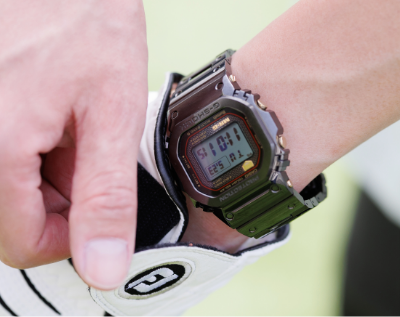
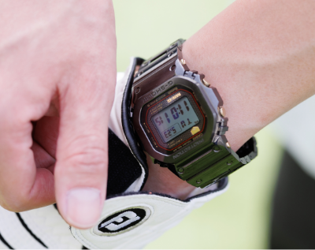

大人になったあなたに、
MR-Gというご提案。
初めてG-SHOCKを手にした瞬間を、
覚えていますか？
初めてG-SHOCKを手に入れた時の高揚感。
タフな相棒を腕に巻き、海に山に、学校、ドライブ、クラブ、
デート…日常の全ての時を共に刻んだ日々を覚えていますか？
大人になりスーツを着る機会が増えた。
後輩や年下の手前、カジュアルな時計は着けづらくなった。
そんな大人のG-SHOCKファンにこそ身につけてほしい。
あなたにぴったりな最高峰のMR-Gが、ここにあります。


スナップ


MRG-B5000モデルは
一分一秒、“今”の時刻を逃さない。
勝負服の袖からのぞく
磨き上げられたsilverブレスは
ビジネスシーンの着用も余裕でこなす
気品と機能美を併せ持つ。

MRG-B5000モデルは
オンもオフもあなたに寄り添う。
多くの人に愛されてきたスクエア
デザインと、初代譲りの存在感は
アクティビティ中の手元も
抜かりなく彩る。

 

カジュアルシーンでは遊びゴコロを。
鮮やかなマリンブルーのパーツが
魅力的なMRG-BF1000Rは
その上質さと美しさの中に
“自分らしさ”をプラスしてくれる。。

（そろそろ、着く頃かな）
秒針のステップが
そのまま逸る鼓動になったようだ。
「勝色」の名を冠するMRG-B2000Bと
特別な夜の時間を楽しもう。
商品ページを見る